A black desk is a decision, not just a furniture purchase.
Once it is in the room, everything else gets styled in relation to it, which makes it worth treating as the anchor it actually is, rather than styling around it as an afterthought.
Here is how to actually build the room from that anchor.

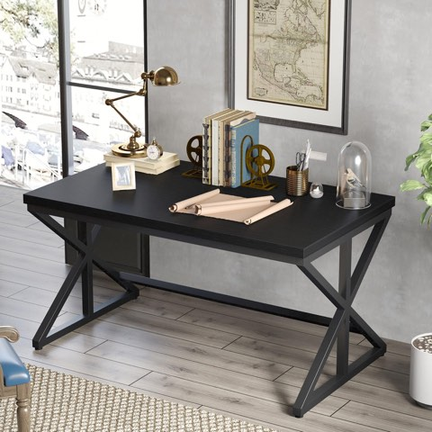
IBF Black Office Desk, Modern Wooden Metal Computer Desk in Office 47 Inch
Shop on Amazon1. Accessorize With Intention
Desk accessories in materials that echo the room's broader palette, brass, warm wood, matte ceramic, tie the smallest details back into the overall look.
This final layer is what makes the whole setup read as considered down to the last object, not just the big furniture pieces.
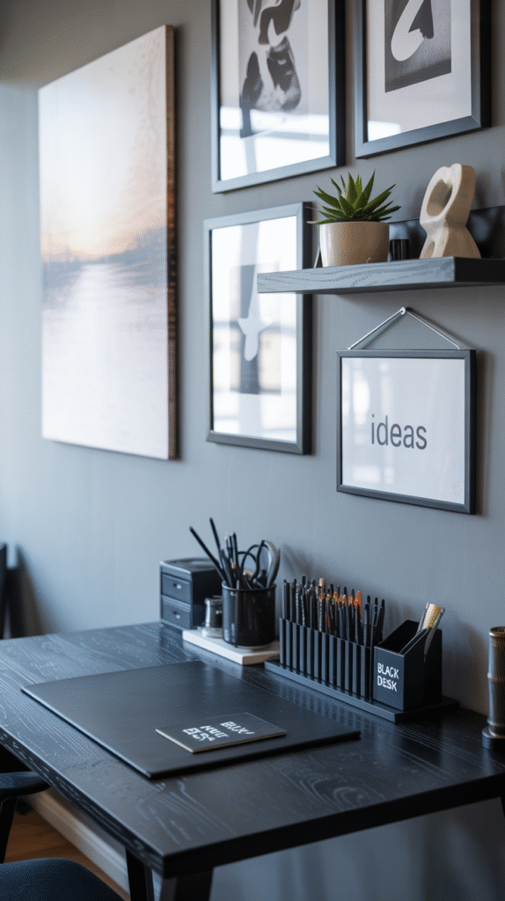
2. Choose Wall Decor Thoughtfully
Art or decor that complements the desk's tone and style, rather than fighting it with clashing colors or an unrelated aesthetic, keeps the whole wall working with the room instead of against it.
One or two considered pieces generally outperform a busier wall arrangement in a room already anchored by a strong piece of furniture.
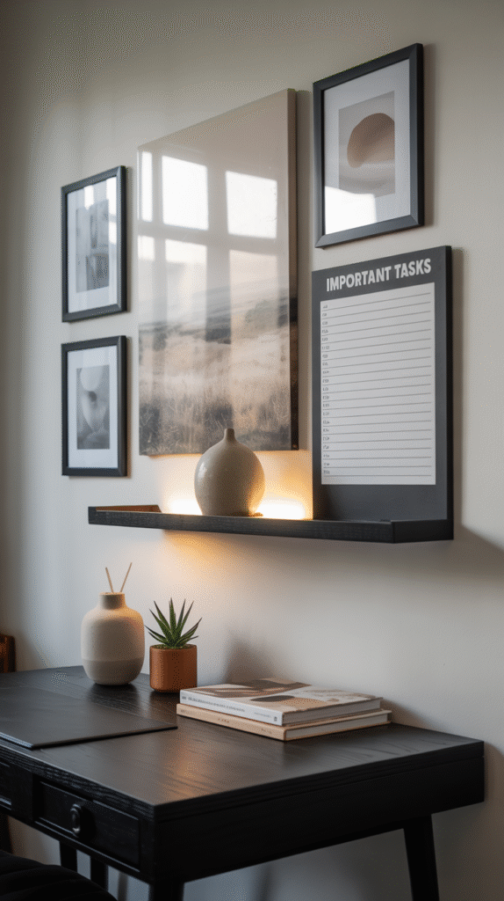
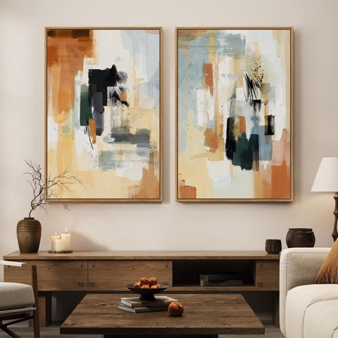
Large Framed Neutral Abstract Wall Art Set of 2 for Living Room, 24x36 In
Shop on Amazon3. Let the Rug Tie It Together
A rug in a complementary tone grounds the black desk and the rest of the furniture into one cohesive scene, rather than leaving pieces feeling separately placed.
A textured, natural-fiber rug in particular softens the room's overall hard edges.
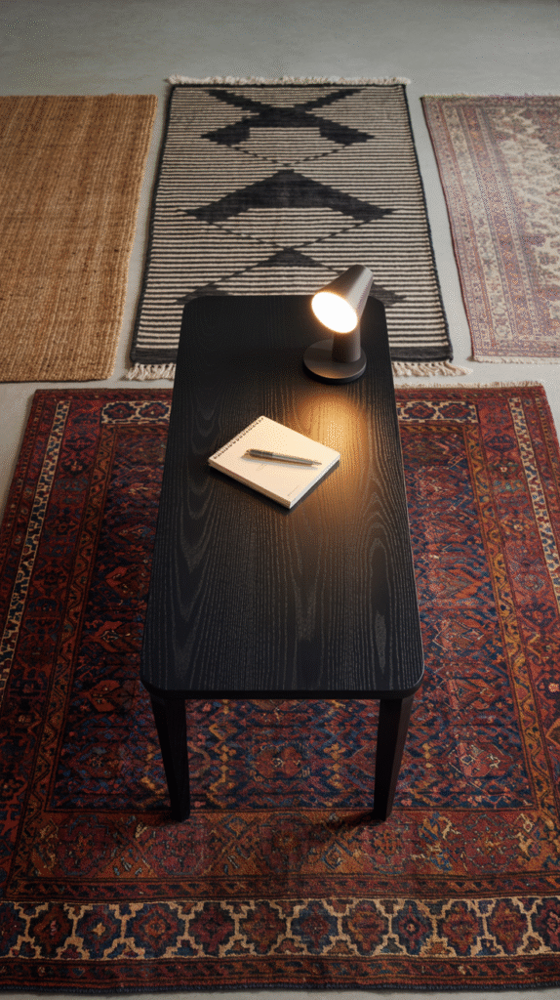

4. Add Personality Without Clutter
A few considered objects, a plant, a small sculpture, a meaningful item, add warmth without competing with the desk's strong presence.
Restraint matters more here than in a lighter, more neutral office, since a black desk already carries significant visual weight on its own.
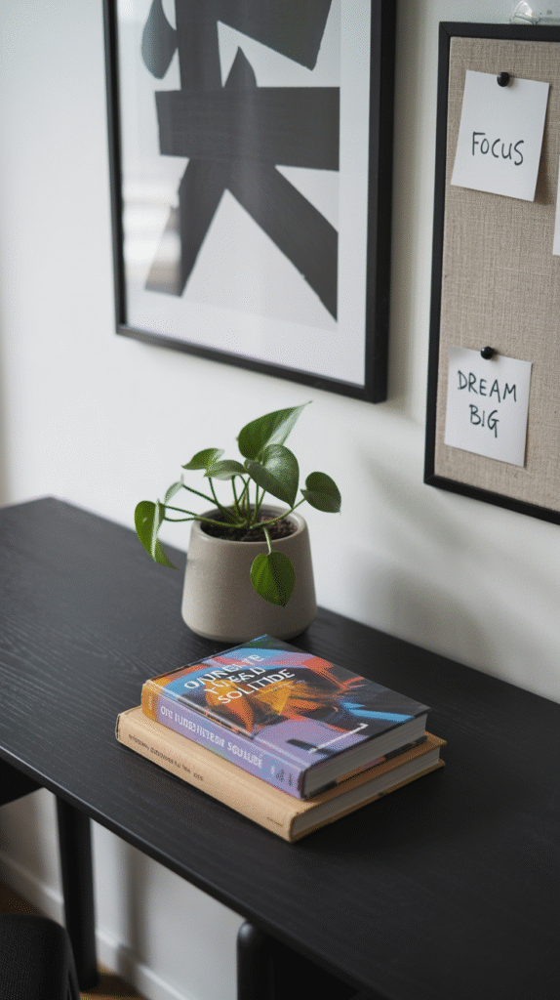
5. Pick a Chair That Does not Undercut the Look
A chair that matches the desk's general style, sleek with sleek, industrial with industrial, keeps the whole setup feeling intentional rather than mismatched.
This is worth prioritizing alongside comfort, since an ill-fitting chair style can undo much of the desk's visual impact.
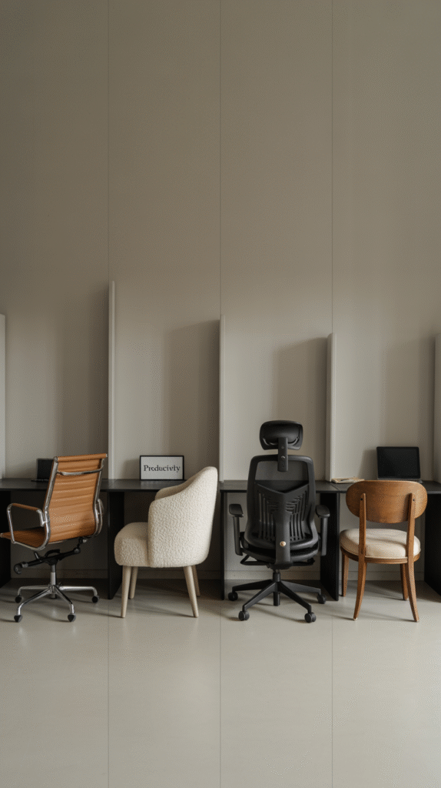
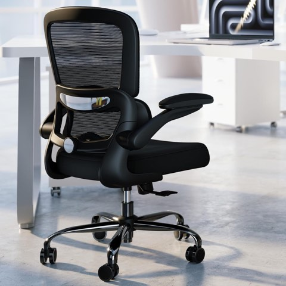
TRALT Office Chair, Ergonomic Desk Chair with Adjustable Lumbar Support
Shop on Amazon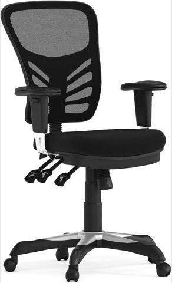
Flash Furniture Mid-Back Black Mesh Multifunction Executive Swivel Ergonomic Office Chair
Shop on Amazon6. Add Storage That Still Looks Good
Storage in a complementary dark tone or a contrasting warm wood both work, as long as the choice is deliberate rather than mismatched.
Closed storage keeps the desk itself as the visual focus, rather than competing with open shelving nearby.
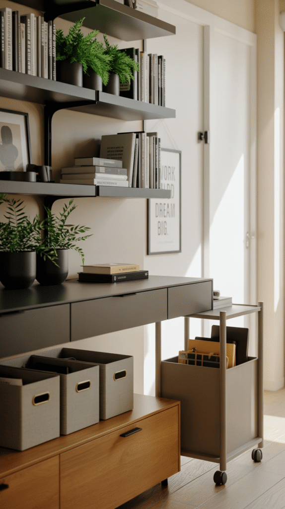
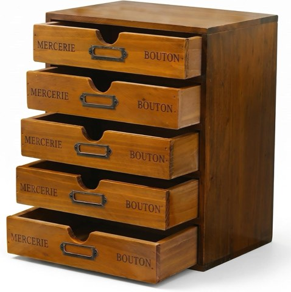
Vintage 5-Drawer Wooden Desk Organizer, Craft Storage, Rustic Shelf Drawer
Shop on Amazon7. Light It Well
A black desk absorbs light rather than reflecting it, which makes good task lighting more important here than with a lighter desk finish.
A statement desk lamp also does double duty, adding both function and a design moment that works with the desk's already strong presence.
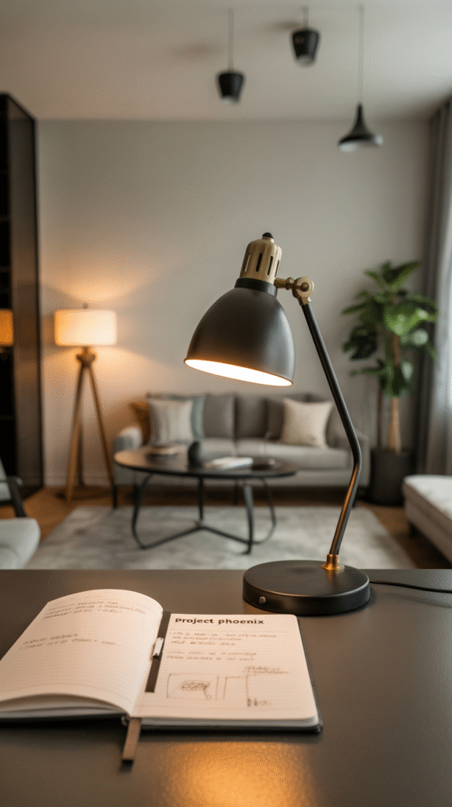
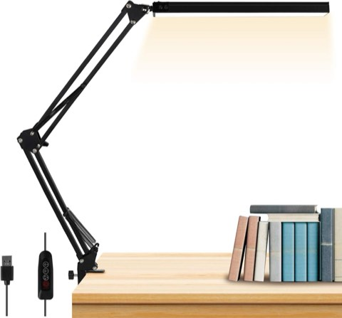
LED Desk Lamp, Metal Swing Arm Desk Lamp with Clamp, Eye-Caring Architect Desk Light
Shop on Amazon8. Choose a Palette That Actually Works With Black
Warm neutrals, soft whites, and natural wood tones all keep a black desk from feeling cold or overly stark.
A black desk pairs especially well with one or two accent colors, rather than an open-ended palette competing with its already-strong presence.
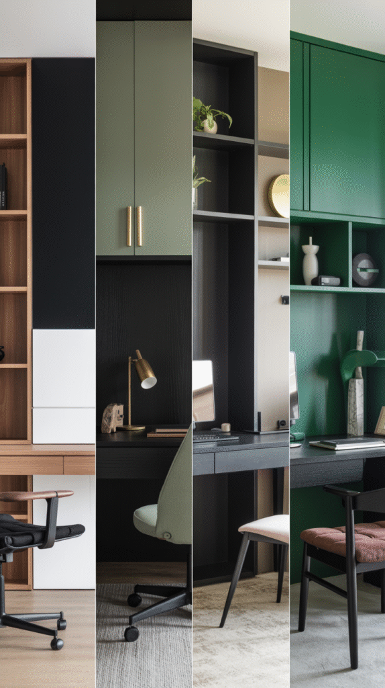
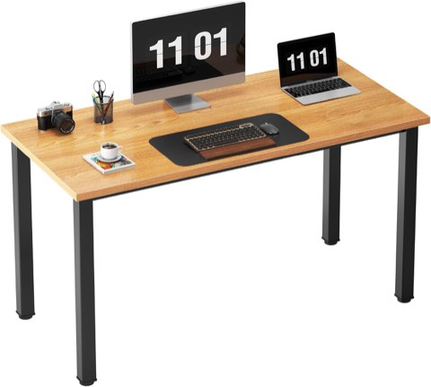
Need 47 inch Computer Desk, Teak Tabletop, Black Metal Frame, Modern Simple
Shop on Amazon
9. Start With the Desk's Personality
A sleek, minimal black desk reads differently than a heavier, more industrial one, and the rest of the room should take its cues from which version is actually in the space.
This is worth identifying clearly before any other styling decision, since it determines whether the room leans modern, industrial, or something else entirely.
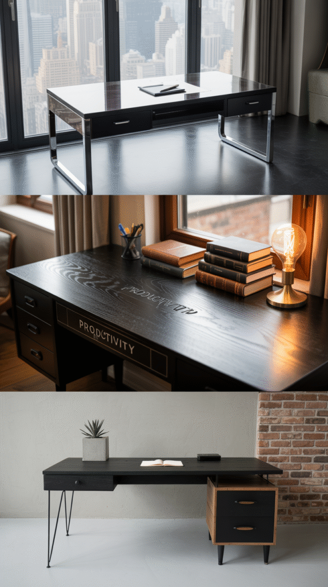
Wood Desk Organizer with Drawer Three Stackable Storage Drawers
Shop on AmazonJIARI Glass Pen Holder Cup for Desk, Pencil Cup Holder
Shop on Amazon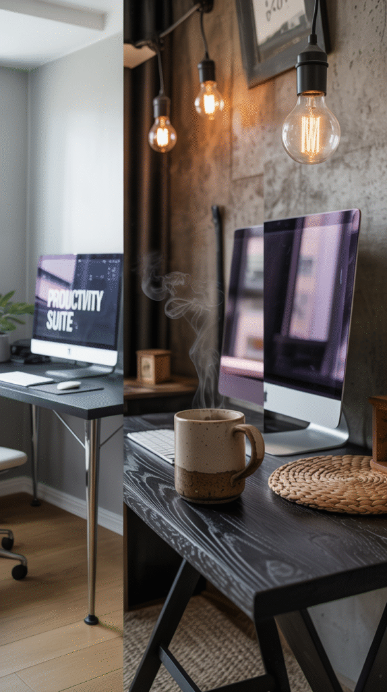
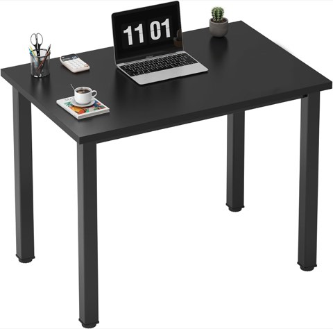
Need Small Computer Desk, 31.5 Inch Sturdy Writing Table, Narrow, Black
Shop on Amazon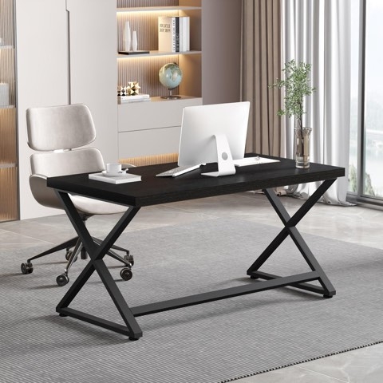
IBF Black Computer Desk, 47" Simple Work Desk for Home Office, Black Oak
Shop on AmazonThe Black Desk as the Hero
None of these choices need to compete with the desk for attention.
Start with the palette and lighting, since both directly respond to the desk's dark tone, then layer in storage, chair, and the smaller details from there.
A black desk genuinely works best as the room's hero, with everything else deliberately supporting it.